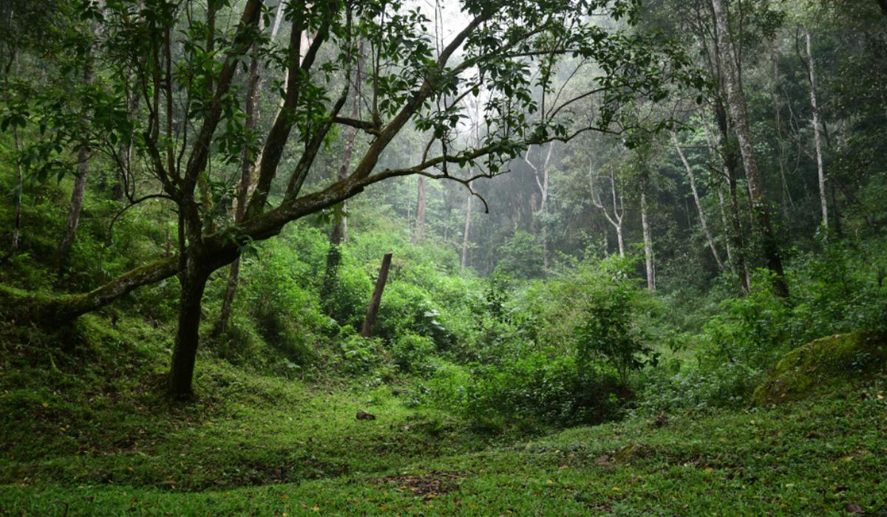
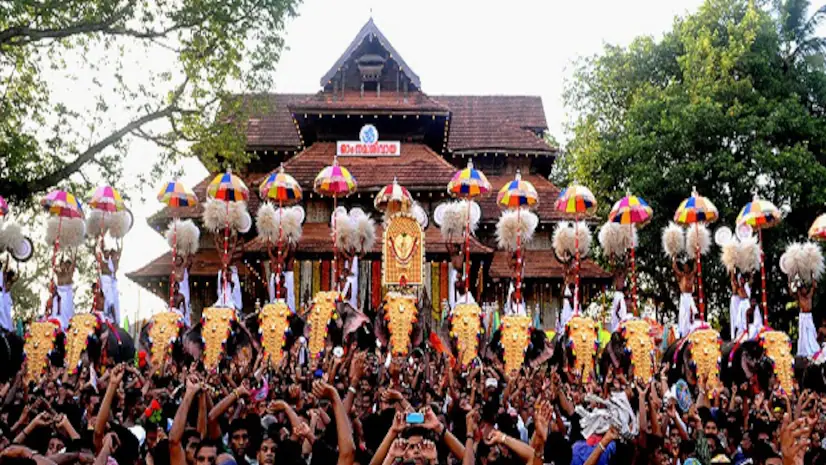

Thiruvananthapuram (or Trivandrum) is the capital of the southern Indian state of Kerala. It's distinguished by its British colonial architecture and many art galleries.
Kollam
Kollam is a city in the state of Kerala, on India's Malabar Coast. It’s known as a trade hub and for its beaches, like lively Kollam and secluded Thirumullavaram.

Pathanamthitta
Pathanamthitta, is a municipality situated in the Southern Kerala, India, spread over an area of 23.50 km². It is the administrative capital of Pathanamthitta district. The town has a population of 37,538.
Alappuzha
Alappuzha district, is one of the 14 districts in the Indian state of Kerala. The name of the district being changed to Alappuzha in 1990, and is the smallest district of Kerala.
Kottayam
Kottayam is a city in the Indian state of Kerala, flanked by the Western Ghats on the east and the Vembanad Lake and paddy fields of Kuttanad on the west.
Idukki
Idukki is one of the 14 districts of Kerala state, India, created on 26 January 1972. This beautiful High range district of Kerala is geographically known for its Mountainous and Dense Forests.
Ernakulam
Ernakulam district was formed on April 1, 1958. The present Ernakulam district includes Paravur, Aluva, Kochi, Kanayannoor, Muvattupuzha, Kunnathunadu, and Kothamangalam taluks.

Thrissur
Thrissur is a city in the south Indian state of Kerala. It's known for sacred sites and colorful festivals. In the center is Vadakkumnathan Temple, dedicated to Lord Shiva and adorned with murals.
Palakkad
Palakkad is home to gorgeous natural beauty and a unique culture that's due to its close proximity to Tamil Nadu, making it different from the rest of Kerala.
Malappuram
The location of Malappuram district is 75 to 77 east longitude and 10 to 12 north latitude, in the geographical map. Malappuram too consists of three natural divisions; lowland, midland and highland.
Kozhikode
The University of Calicut is the largest University in Kerala. Established in the year 1968, it is the second university to be set up in Kerala.
Wayanad
Wayanad, the green paradise is nestled among the mountains of the Western Ghats, forming the border world of the greener part of Kerala. This land is filled with history and culture.
Kannur
Kannur is most renowned for the Theyyam performances in its temples. This magnificent art form plays an integral part in the culture of this Northern Kerala district.
Kasaragod
Kasaragod is a municipal town and administrative headquarters of Kasaragod district in the state of Kerala, India. Established in 1966, Kasaragod was the first municipal town in the district.